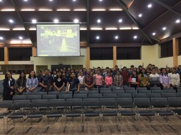

Entries
| JUDUL | TANGGAL UPLOAD | DESKRIPSI | GAMBAR | ACTIONS |
|---|---|---|---|---|
| IT Del Sosialisasikan Program MBKM kepada Mahasiswa | 24 November 2023 | Pada Kamis, 23 November 2023, Divisi Pembelajaran Diluar Kampus – UPT PP ESTEM melaksanakan sosialisasi MBKM (Merdeka Belajar Kampus Merdeka) untuk mahasiswa-mahasiswi IT Del. Sosialisasi dihadiri oleh Monalisa Pasaribu selaku Ketua UPT PP ESTEM, Eka Sinambela mewakili Panitia IISMA, Theodora Lumban Gaol dan Philipians Manurung mewakili Panitia MBKM BGI, Anggiat Tambunan dari Biro Administrasi Akademik serta Martha Tambunan selaku staff administrasi UPT PP ESTEM. |  |
|
| Sampling Kemenyan Toba di Kabupaten Tapanuli Utara, Kabupaten Humbang Hasundutan, dan Kabupaten Pakpak Bharat | 23 November 2023 | Tim Institut Teknologi Del yang terdiri atas Ymelda A. C. Manurung, M.Sc. (Peneliti Genomik Herbal KHDTK IT Del), Roga Florida Kembaren, M.Si. (Dosen Teknik Bioproses IT Del) dan Darwin Silalahi, M.P. (Peneliti Genomik Hortikultura KHDTK IT Del) melakukan pengambilan sampel daun kemenyan sebagai bagian dari kegiatan penelitian “Pengungkapan Biodiversitas dan Mekanisme Genetik Biosintesis Senyawa Terapeutik Tanaman Kemenyan Menggunakan Analisis Genom” inisiasi kerjasama dengan Badan Riset Inovasi Nasional (BRIN), selama 5 hari (13 – 17 November 2023). |  |
|
| Kuliah Umum oleh Konsulat Amerika Serikat terkait Suku Asli Amerika Serikat | 27 November 2023 | Tim Institut Teknologi Del yang terdiri atas Ymelda A. C. Manurung, M.Sc. (Peneliti Genomik Herbal KHDTK IT Del), Roga Florida Kembaren, M.Si. (Dosen Teknik Bioproses IT Del) dan Darwin Silalahi, M.P. (Peneliti Genomik Hortikultura KHDTK IT Del) melakukan pengambilan sampel daun kemenyan sebagai bagian dari kegiatan penelitian “Pengungkapan Biodiversitas dan Mekanisme Genetik Biosintesis Senyawa Terapeutik Tanaman Kemenyan Menggunakan Analisis Genom” inisiasi kerjasama dengan Badan Riset Inovasi Nasional (BRIN), selama 5 hari (13 – 17 November 2023). |  |
|